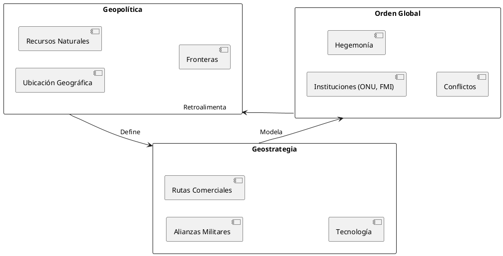

El Mapa y El Código: Geostrategia, Geopolítica y el Orden Global
El Mapa y El Código: Geostrategia, Geopolítica y el Orden Global
Resumen Ejecutivo
Este post explora la intersección crítica entre la geostrategia, la geopolítica y el orden global, argumentando que estos conceptos son fundamentales para entender los conflictos, alianzas y transformaciones del poder en el siglo XXI. Se incluyen referencias a teóricos clásicos y contemporáneos, junto con un diagrama que sintetiza las relaciones clave.
Introducción: El Poder del Territorio y la Ideología
El mundo no se rige únicamente por fronteras físicas, sino por códigos invisibles de poder: recursos, rutas comerciales, tecnología y narrativas. La geopolítica (estudio del espacio y poder) y la geostrategia (aplicación práctica de ese estudio) moldean instituciones como la ONU, la OTAN o iniciativas como la Nueva Ruta de la Seda.
Marco Teórico
1. Geopolítica: La Ciencia del Espacio y el Poder
- Definición: Análisis de cómo la geografía física y humana influye en la política internacional (ej: recursos, ubicación).
- Teóricos clave:
- Halford Mackinder: "El pivote geográfico de la historia" (1904) – controlar el "Heartland" (Eurasia) es clave para dominar el mundo.
- Nicholas Spykman: Teoría del "Rimland" – el poder reside en los bordes costeros de Eurasia.
- Alfred Thayer Mahan: Importancia del dominio naval.
2. Geostrategia: Del Mapa a la Acción
- Definición: Diseño de políticas para proyectar poder en espacios críticos (ej: control del Estrecho de Malaca para el comercio marítimo).
- Casos históricos:
- Guerra Fría: Containment (EE.UU.) vs. expansión comunista (URSS).
- China moderna: Iniciativa Belt and Road para crear redes de influencia económica.
3. Orden Global: ¿Unipolaridad, Multipolaridad o Caos?
- Transiciones históricas:
- Pax Britannica (siglo XIX) → Pax Americana (post-1945) → ¿Pax Technologica? (s. XXI).
- Factores disruptivos:
- Tecnología (ciberguerra, satélites).
- Cambio climático (conflictos por agua, migraciones).
- Actores no estatales (corporaciones, ONGs).
Diagrama UML: Relaciones Geopolíticas (PlantUML)

Figure 1: relacionesgeopoliticas | Fuente: Datos Técnicos
Casos de Estudio Contemporáneos
1. Ucrania: La Batalla por el Heartland
- Rusia vs. OTAN: Control del espacio postsoviético.
- Recursos: Gas natural, tierras fértiles (Ucrania es "el granero de Europa").
2. Indo-Pacífico: El Nuevo Rimland
- EE.UU. y aliados vs. China: Contención mediante alianzas como QUAD (EE.UU., India, Japón, Australia).
- Rutas marítimas críticas: 60% del comercio mundial pasa por el Mar de China Meridional.
3. África: La Última Frontera Geopolítica
- Competencia por minerales raros (cobalto, litio) para transición energética.
- Inversiones chinas vs. influencia histórica europea.
Críticas y Controversias
- Determinismo geográfico: ¿Ignora la agencia humana? (Ej: Singapur, sin recursos, es potencia financiera).
- Eurocentrismo: Teorías clásicas marginan perspectivas del Sur Global.
- Ética: ¿Justifica intervencionismo? (Ej: invasión de Irak bajo narrativas geostratégicas).
Conclusión: Hacia un Código de Convivencia Global
El orden mundial no es inmutable: se reescribe con cada innovación tecnológica, tratado o conflicto. La geostrategia y la geopolítica son "lentes" necesarios, pero deben complementarse con ética y cooperación multilateral.
Referencias Documentales
- Mackinder, H. J. (1904). The Geographical Pivot of History. The Geographical Journal.
- Brzezinski, Z. (1997). El Gran Tablero Mundial: La Supremacía Estadounidense y sus Imperativos Geoestratégicos.
- Kaplan, R. D. (2012). La Venganza de la Geografía.
- Council on Foreign Relations (2023). Informe anual sobre tendencias globales.
- Friedman, G. (2009). Los Próximos 100 Años: Un Pronóstico para el Siglo XXI.
Notas al Pie
El blog se escribe en Emacs usando Org Mode y se publica en GitHub. Para replicar el diagrama, instala PlantUML y configura el backend.